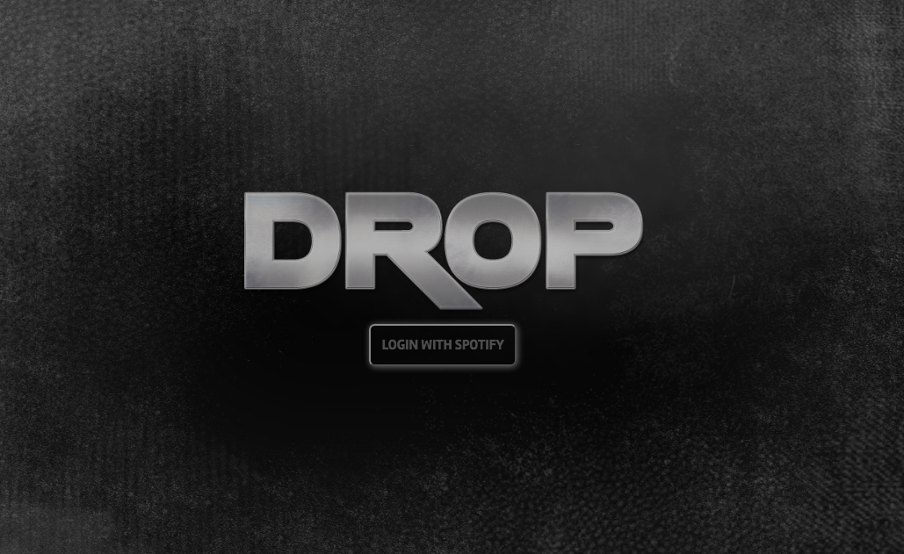

Drop
DROP is a responsive application for discovering new albums, tracks, and artists that interacts seamlessly with your Spotify account.
TECH STACK
HTML, JavaScript, AngularJS, jQuery, Sass, Grunt, Mocha, Chai, Karma, and Spotify API